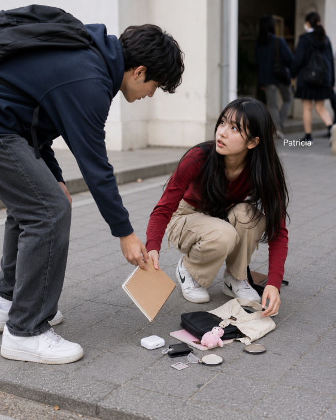

| Patricia, a Japanese teenage girl with long black hair
and warm brown eyes, was dressed in a red long-sleeve shirt, beige cargo pants,
and white Nike shoes as she walked home. Absorbed in her thoughts, she didn’t notice
the uneven pavement—until her foot caught, sending her tumbling to the ground. Her prized notebook,
filled with sketches and personal writings, slipped from her hands and landed on the concrete.
|
 |
|
| As she pushed herself up, a figure crouched beside her.
She reached out, expecting help, but instead, the person snatched her notebook and
bolted into the crowd. Patricia’s heart raced as she realized what had happened, left standing there,
stunned and empty-handed, watching the thief vanish with her most treasured possession. |